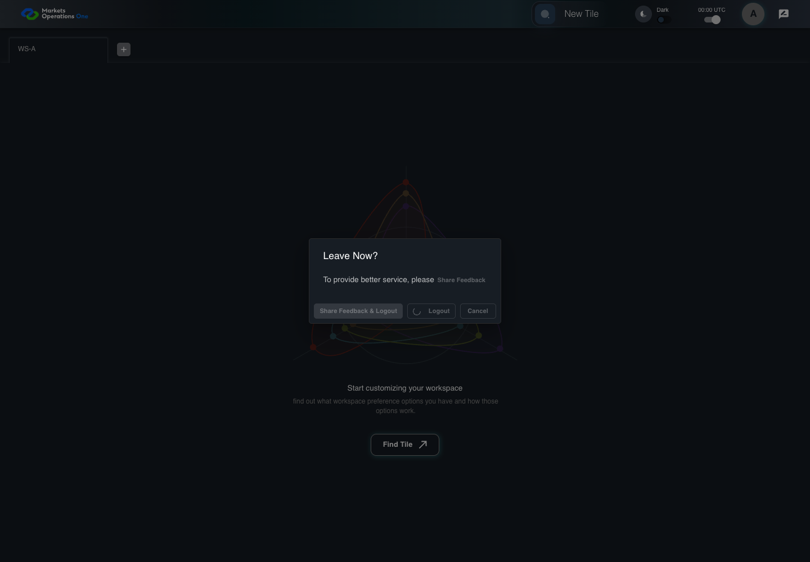

All canonical cases
AUTH-105: Open feedback and log out Business acceptance remains unverified. Owner: unknown. Review the canonical definition and fixture limits before acceptance.
Latest local result: PASS Business acceptance: NOT_ESTABLISHED.
The latest local result describes execution. The historical definition review assesses the case design before execution.
Latest step screenshot evidence: COMPLETE . 11/11 canonical steps have execution screenshots.
Canonical Gherkin definition . Definition version: 2. SHA-256: 4014d85711ac81d08730bd121dcc6877dc13d4cf60d079d77a695f7c88327d6e.
Historical definition review (preflight): UNVERIFIED A definition review FAIL can coexist with local PASS. The definition failed preflight quality checks.
This historical review does not change the latest execution result. Resolve definition gaps before business acceptance.
Canonical Gherkin steps Feature: Logout
@AUTH-105
Scenario: Open feedback and log out
Given User A is authenticated as user-a in an isolated browser context
And the selected fixture tab is labelled "WS-A" inside the tablist named "workspaces" on the Home page
And the dialog named "Leave Now?" on the Home page is visible
And the browser permits the configured feedback popup
When User A clicks the button labelled "Share Feedback & Logout" inside the dialog named "Leave Now?" on the Home page
Then exactly one popup named "surveyLink" navigates to the active environment survey URL
When the controlled browser clock advances through the 1000-millisecond logout delay
Then the textbox with placeholder "Enter Username" on the login page is visible
And the text input with placeholder "Enter Password" on the login page is visible
And the button labelled "Sign In" on the login page is visible
And the tablist named "workspaces" on the Home page is absent Acceptance and evidence limits: NO_COMPLETE_REAL_APPLICATION_BINDING, CANONICAL_REVIEW_OR_EVIDENCE_UNRESOLVED.
Planned essential canonical frames: 2. Plan completeness requires separate review.
Latest attempt AUTH-105 feedback popup boundary PASS · application/run-050/auth-105-feedback-popup-boundary-495ebd910e23-attempt-1 · ACTUAL_APPLICATION_LOCAL_SERVICES
Actual MFE with controlled HTTP responses, clock, visibility and popup boundary. Browser-only unsigned credentials. No real provider or server security acceptance.
2026-10-22T06:04:44.743Z to 2026-10-22T06:04:49.733Z
Assertions and result · Artifact manifest · Exact run inputs and source hashes
Result SHA-256: 941abb5d823ad9603b38b02ac4c8a551f5c75da7287f250285784948a86c7792 Playwright trace
Machine observations Screenshot capture: CAPTURED. Named frames: 12.
Step screenshot evidence: COMPLETE. 11/11 canonical steps have execution screenshots.
Canonical step timeline Given User A is authenticated as user-a in an isolated browser context
1. step-01 Visible state after step 1: Given User A is authenticated as user-a in an isolated browser context
2026-10-22T06:04:47.110Z · 1440×1000173819b107f9721ddd580be6e85c728fb50ae34f4f23504c76db9e83104ff541 And the selected fixture tab is labelled "WS-A" inside the tablist named "workspaces" on the Home page
2. step-02 Visible state after step 2: And the selected fixture tab is labelled "WS-A" inside the tablist named "workspaces" on the Home page
2026-10-22T06:04:47.210Z · 1440×1000173819b107f9721ddd580be6e85c728fb50ae34f4f23504c76db9e83104ff541 And the dialog named "Leave Now?" on the Home page is visible
3. step-03 Visible state after step 3: And the dialog named "Leave Now?" on the Home page is visible
2026-10-22T06:04:47.417Z · 1440×1000dc7e7051c985e11d6d9f4f29a73084c9898187f90447706caf0a68d6eb03ef4c And the browser permits the configured feedback popup
4. step-04 Visible state after step 4: And the browser permits the configured feedback popup
2026-10-22T06:04:47.486Z · 1440×1000dc7e7051c985e11d6d9f4f29a73084c9898187f90447706caf0a68d6eb03ef4c When User A clicks the button labelled "Share Feedback & Logout" inside the dialog named "Leave Now?" on the Home page
5. step-05 Visible state after step 5: When User A clicks the button labelled "Share Feedback & Logout" inside the dialog named "Leave Now?" on the Home page
2026-10-22T06:04:47.701Z · 1440×1000373711e22bfab842bf9659ba56dcedf0ea75dd5dfa705463f1dbb862b7bef785 Then exactly one popup named "surveyLink" navigates to the active environment survey URL

6. step-06 Visible state after step 6: Then exactly one popup named "surveyLink" navigates to the active environment survey URL
2026-10-22T06:04:47.786Z · 1440×1000373711e22bfab842bf9659ba56dcedf0ea75dd5dfa705463f1dbb862b7bef785 When the controlled browser clock advances through the 1000-millisecond logout delay
7. step-07 Visible state after step 7: When the controlled browser clock advances through the 1000-millisecond logout delay
2026-10-22T06:04:48.143Z · 1440×100059c4e063cab140c3f713f0512ac90aebc5ae2dd3932cddd7e50e5f5f00d57386 Then the textbox with placeholder "Enter Username" on the login page is visible
8. step-08 Visible state after step 8: Then the textbox with placeholder "Enter Username" on the login page is visible
2026-10-22T06:04:48.358Z · 1440×100099567bb3808af958792a6b38879d848938c08b417fb7dfff75bde75fcbd51a3a And the text input with placeholder "Enter Password" on the login page is visible
9. step-09 Visible state after step 9: And the text input with placeholder "Enter Password" on the login page is visible
2026-10-22T06:04:48.561Z · 1440×100099567bb3808af958792a6b38879d848938c08b417fb7dfff75bde75fcbd51a3a And the button labelled "Sign In" on the login page is visible
10. step-10 Visible state after step 10: And the button labelled "Sign In" on the login page is visible
2026-10-22T06:04:48.744Z · 1440×100099567bb3808af958792a6b38879d848938c08b417fb7dfff75bde75fcbd51a3a And the tablist named "workspaces" on the Home page is absent
11. step-11 Visible state after step 11: And the tablist named "workspaces" on the Home page is absent
2026-10-22T06:04:48.955Z · 1440×100099567bb3808af958792a6b38879d848938c08b417fb7dfff75bde75fcbd51a3a Additional named frames 12. final-result The final visible state after the named test assertions.
2026-10-22T06:04:49.351Z · 1440×100099567bb3808af958792a6b38879d848938c08b417fb7dfff75bde75fcbd51a3a Screenshots establish visible state only. Assertions and traces support functional claims.
Earlier attempt history (2) Earlier attempt PASS (superseded by latest PASS) AUTH-105 feedback popup boundary PASS · application/run-043/auth-105-feedback-popup-boundary-495ebd910e23-attempt-1 · ACTUAL_APPLICATION_LOCAL_SERVICES
Actual MFE with controlled HTTP responses, clock, visibility and popup boundary. Browser-only unsigned credentials. No real provider or server security acceptance.
2026-10-22T05:51:08.185Z to 2026-10-22T05:51:09.990Z
Assertions and result · Artifact manifest · Exact run inputs and source hashes
Result SHA-256: 6a0cccc19437a2d1534e0d10f26ae35f3ebab5338c6ed4d586c917e1ab8e1acd Playwright trace
Machine observations Screenshot capture: CAPTURED. Named frames: 12.
Step screenshot evidence: COMPLETE. 11/11 canonical steps have execution screenshots.
Canonical step timeline Given User A is authenticated as user-a in an isolated browser context
1. step-01 Visible state after step 1: Given User A is authenticated as user-a in an isolated browser context
2026-10-22T05:51:08.645Z · 1440×1000173819b107f9721ddd580be6e85c728fb50ae34f4f23504c76db9e83104ff541 And the selected fixture tab is labelled "WS-A" inside the tablist named "workspaces" on the Home page
2. step-02 Visible state after step 2: And the selected fixture tab is labelled "WS-A" inside the tablist named "workspaces" on the Home page
2026-10-22T05:51:08.677Z · 1440×1000173819b107f9721ddd580be6e85c728fb50ae34f4f23504c76db9e83104ff541 And the dialog named "Leave Now?" on the Home page is visible
3. step-03 Visible state after step 3: And the dialog named "Leave Now?" on the Home page is visible
2026-10-22T05:51:08.765Z · 1440×1000dc7e7051c985e11d6d9f4f29a73084c9898187f90447706caf0a68d6eb03ef4c And the browser permits the configured feedback popup
4. step-04 Visible state after step 4: And the browser permits the configured feedback popup
2026-10-22T05:51:08.792Z · 1440×1000dc7e7051c985e11d6d9f4f29a73084c9898187f90447706caf0a68d6eb03ef4c When User A clicks the button labelled "Share Feedback & Logout" inside the dialog named "Leave Now?" on the Home page
5. step-05 Visible state after step 5: When User A clicks the button labelled "Share Feedback & Logout" inside the dialog named "Leave Now?" on the Home page
2026-10-22T05:51:08.908Z · 1440×1000373711e22bfab842bf9659ba56dcedf0ea75dd5dfa705463f1dbb862b7bef785 Then exactly one popup named "surveyLink" navigates to the active environment survey URL
6. step-06 Visible state after step 6: Then exactly one popup named "surveyLink" navigates to the active environment survey URL
2026-10-22T05:51:08.947Z · 1440×1000a1e3084c41cf8dafb8d869d3bf695eded24f05c10d7d58118125aa5b28f8f9ef When the controlled browser clock advances through the 1000-millisecond logout delay
7. step-07 Visible state after step 7: When the controlled browser clock advances through the 1000-millisecond logout delay
2026-10-22T05:51:09.144Z · 1440×100059c4e063cab140c3f713f0512ac90aebc5ae2dd3932cddd7e50e5f5f00d57386 Then the textbox with placeholder "Enter Username" on the login page is visible
8. step-08 Visible state after step 8: Then the textbox with placeholder "Enter Username" on the login page is visible
2026-10-22T05:51:09.251Z · 1440×100099567bb3808af958792a6b38879d848938c08b417fb7dfff75bde75fcbd51a3a And the text input with placeholder "Enter Password" on the login page is visible
9. step-09 Visible state after step 9: And the text input with placeholder "Enter Password" on the login page is visible
2026-10-22T05:51:09.371Z · 1440×100099567bb3808af958792a6b38879d848938c08b417fb7dfff75bde75fcbd51a3a And the button labelled "Sign In" on the login page is visible
10. step-10 Visible state after step 10: And the button labelled "Sign In" on the login page is visible
2026-10-22T05:51:09.486Z · 1440×100099567bb3808af958792a6b38879d848938c08b417fb7dfff75bde75fcbd51a3a And the tablist named "workspaces" on the Home page is absent
11. step-11 Visible state after step 11: And the tablist named "workspaces" on the Home page is absent
2026-10-22T05:51:09.604Z · 1440×100099567bb3808af958792a6b38879d848938c08b417fb7dfff75bde75fcbd51a3a Additional named frames 12. final-result The final visible state after the named test assertions.
2026-10-22T05:51:09.803Z · 1440×100099567bb3808af958792a6b38879d848938c08b417fb7dfff75bde75fcbd51a3a Screenshots establish visible state only. Assertions and traces support functional claims.
Earlier attempt PASS (superseded by latest PASS) AUTH-105 feedback popup boundary PASS · application/run-042/auth-105-feedback-popup-boundary-495ebd910e23-attempt-1 · ACTUAL_APPLICATION_LOCAL_SERVICES
Actual MFE with controlled HTTP responses, clock, visibility and popup boundary. Browser-only unsigned credentials. No real provider or server security acceptance.
2026-10-22T05:46:42.265Z to 2026-10-22T05:46:44.300Z
Assertions and result · Artifact manifest · Exact run inputs and source hashes
Result SHA-256: 7a594f312457212d589bd03bf91bd5690565935be90718a2c270df335a138a0b Playwright trace
Machine observations Screenshot capture: CAPTURED. Named frames: 12.
Step screenshot evidence: COMPLETE. 11/11 canonical steps have execution screenshots.
Canonical step timeline Given User A is authenticated as user-a in an isolated browser context
1. step-01 Visible state after step 1: Given User A is authenticated as user-a in an isolated browser context
2026-10-22T05:46:42.817Z · 1440×1000173819b107f9721ddd580be6e85c728fb50ae34f4f23504c76db9e83104ff541 And the selected fixture tab is labelled "WS-A" inside the tablist named "workspaces" on the Home page
2. step-02 Visible state after step 2: And the selected fixture tab is labelled "WS-A" inside the tablist named "workspaces" on the Home page
2026-10-22T05:46:42.849Z · 1440×1000173819b107f9721ddd580be6e85c728fb50ae34f4f23504c76db9e83104ff541 And the dialog named "Leave Now?" on the Home page is visible
3. step-03 Visible state after step 3: And the dialog named "Leave Now?" on the Home page is visible
2026-10-22T05:46:42.947Z · 1440×1000dc7e7051c985e11d6d9f4f29a73084c9898187f90447706caf0a68d6eb03ef4c And the browser permits the configured feedback popup
4. step-04 Visible state after step 4: And the browser permits the configured feedback popup
2026-10-22T05:46:42.978Z · 1440×1000dc7e7051c985e11d6d9f4f29a73084c9898187f90447706caf0a68d6eb03ef4c When User A clicks the button labelled "Share Feedback & Logout" inside the dialog named "Leave Now?" on the Home page
5. step-05 Visible state after step 5: When User A clicks the button labelled "Share Feedback & Logout" inside the dialog named "Leave Now?" on the Home page
2026-10-22T05:46:43.046Z · 1440×1000373711e22bfab842bf9659ba56dcedf0ea75dd5dfa705463f1dbb862b7bef785 Then exactly one popup named "surveyLink" navigates to the active environment survey URL
6. step-06 Visible state after step 6: Then exactly one popup named "surveyLink" navigates to the active environment survey URL
2026-10-22T05:46:43.079Z · 1440×1000a1e3084c41cf8dafb8d869d3bf695eded24f05c10d7d58118125aa5b28f8f9ef When the controlled browser clock advances through the 1000-millisecond logout delay
7. step-07 Visible state after step 7: When the controlled browser clock advances through the 1000-millisecond logout delay
2026-10-22T05:46:43.301Z · 1440×100059c4e063cab140c3f713f0512ac90aebc5ae2dd3932cddd7e50e5f5f00d57386 Then the textbox with placeholder "Enter Username" on the login page is visible
8. step-08 Visible state after step 8: Then the textbox with placeholder "Enter Username" on the login page is visible
2026-10-22T05:46:43.423Z · 1440×100099567bb3808af958792a6b38879d848938c08b417fb7dfff75bde75fcbd51a3a And the text input with placeholder "Enter Password" on the login page is visible
9. step-09 Visible state after step 9: And the text input with placeholder "Enter Password" on the login page is visible
2026-10-22T05:46:43.553Z · 1440×100099567bb3808af958792a6b38879d848938c08b417fb7dfff75bde75fcbd51a3a And the button labelled "Sign In" on the login page is visible
10. step-10 Visible state after step 10: And the button labelled "Sign In" on the login page is visible
2026-10-22T05:46:43.683Z · 1440×100099567bb3808af958792a6b38879d848938c08b417fb7dfff75bde75fcbd51a3a And the tablist named "workspaces" on the Home page is absent
11. step-11 Visible state after step 11: And the tablist named "workspaces" on the Home page is absent
2026-10-22T05:46:43.781Z · 1440×100099567bb3808af958792a6b38879d848938c08b417fb7dfff75bde75fcbd51a3a Additional named frames 12. final-result The final visible state after the named test assertions.
2026-10-22T05:46:44.014Z · 1440×100099567bb3808af958792a6b38879d848938c08b417fb7dfff75bde75fcbd51a3a Screenshots establish visible state only. Assertions and traces support functional claims.